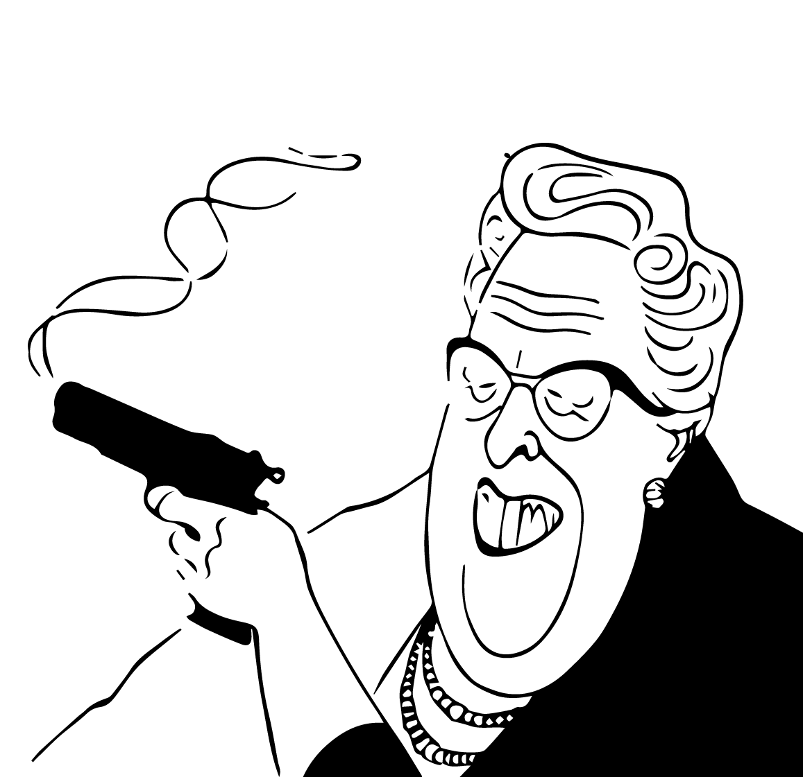

Agatha Christie
È stata una scrittrice di oltre 66
romanzi gialli, una dozzina di raccolte di
racconti brevi, e numerose opere teatrali.
Qualcosa sulla scrittrice
Dame Agatha Mary Clarissa Christie, Lady Mallowan, nata Agatha Mary Clarissa Miller (Torquay, 15 settembre 1890 – Winterbrook, 12 gennaio 1976), è stata una scrittrice e drammaturga britannica. Considerata una delle scrittrici più influenti e prolifiche del XX secolo di un esorbitante numero di racconti,
opere teatrali e romanzi rosa scritti sotto lo pseudonimo di Mary Westmacott. In virtù di questi risulta secondo l'Index Translationum dell'UNESCO la scrittrice britannica più tradotta nella storia dell'editoria, e tutt'oggi pubblicati con successo a livello mondiale, seconda solo a William Shakespeare.